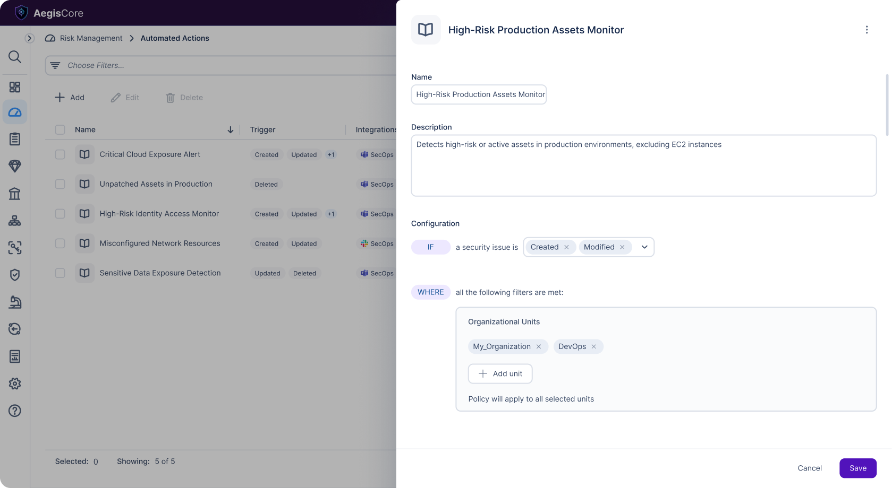
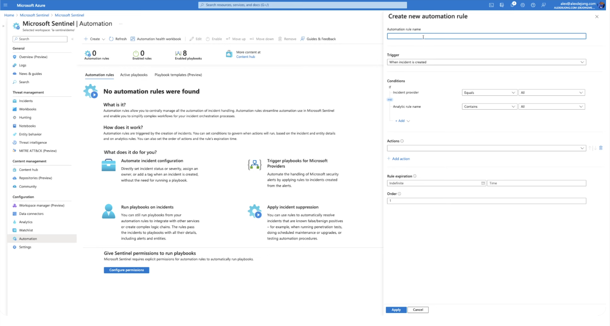
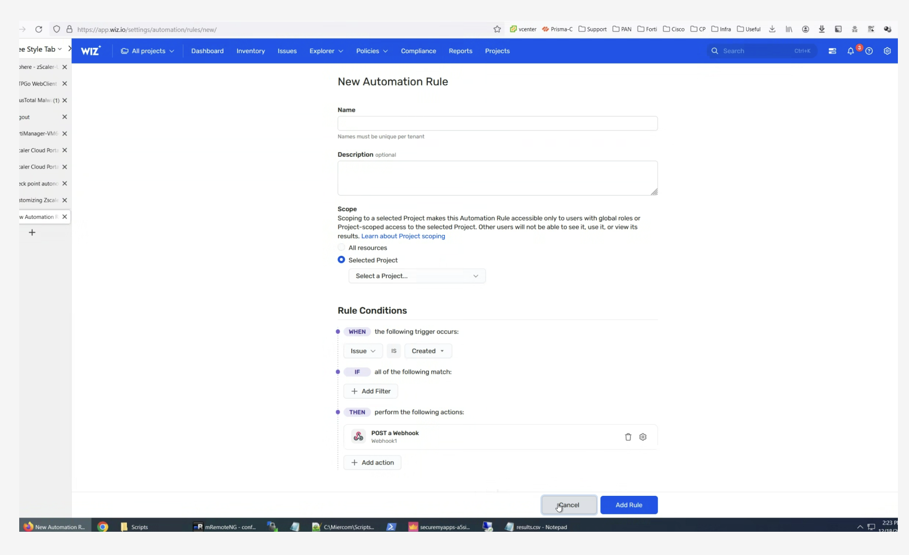
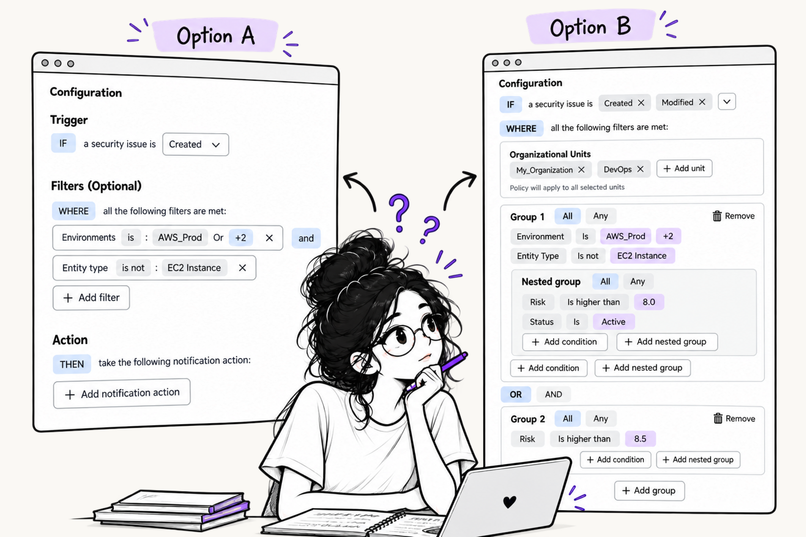
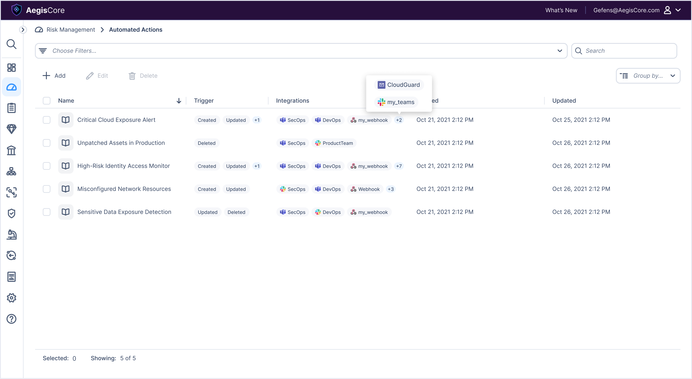
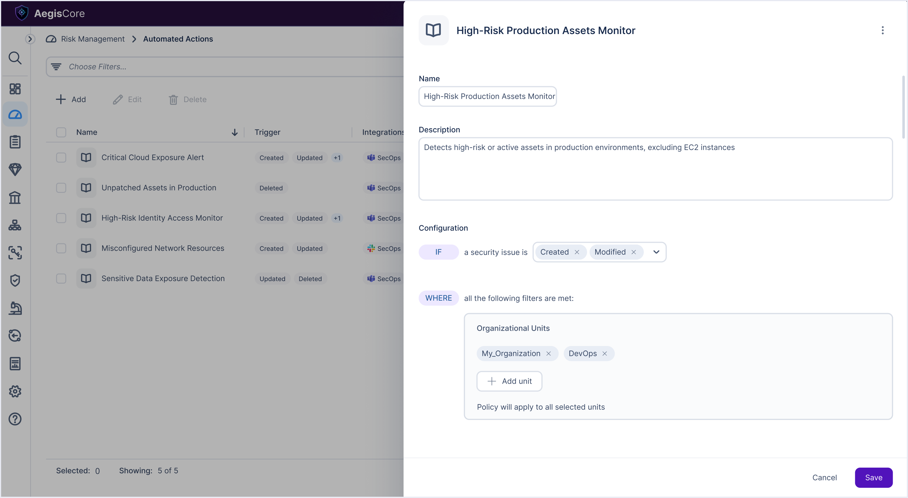
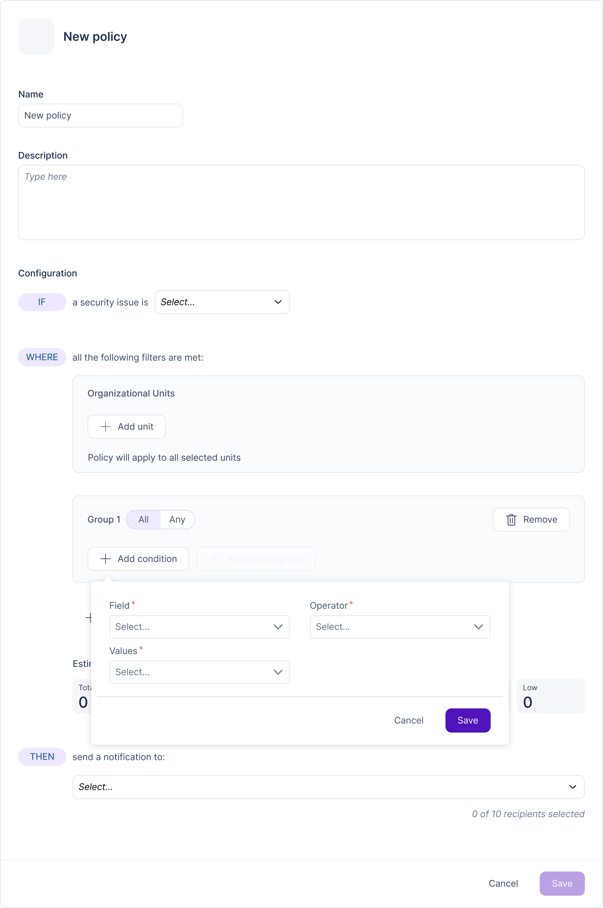
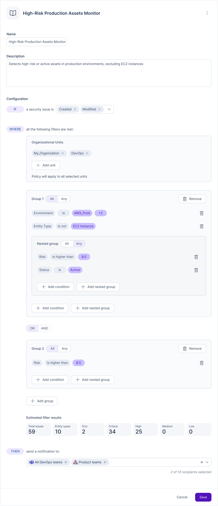
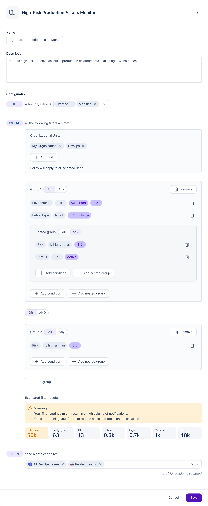

Responsabilities: UX, Research

This project focuses on improving the experience of creating security policies within a cloud security platform that provides visibility and control over cloud environments. Creating policies is often a complex and technical process, requiring users to define rules, conditions, and scopes while aligning with security standards. This complexity can make the process time consuming and error prone. The goal is to simplify policy creation through a clear, guided flow that reduces cognitive load and enables users to create accurate, effective policies with confidence.
The Problem:
Creating security policies is a complex and technical process. Users are required to define multiple elements such as rules, conditions, and scopes making it difficult to navigate and understand. Without a clear and intuitive structure, the process can feel overwhelming and hard to manage.
Pain Points:
High cognitive load due to multiple parameters and configurations
Lack of guidance during the creation process
Policies that are not precise enough, resulting in too many irrelevant issues
Our Goals:
To simplify and streamline the policy creation process by providing a guided, structured experience that improves clarity and enables users to create effective policies with confidence.
Noa is a cloud security engineer responsible for managing security policies across multi-cloud environments. She needs a clear, structured way to define complex rules and conditions, understand policy logic, and reduce unnecessary noise.
Frustrations:
Creating policies feels complex and overwhelming due to too many parameters and configurations
Difficulty understanding how different rules and conditions affect the final outcome
Policies often generate too many irrelevant issues, creating noise and reducing trust in the results
Needs:
A clear and structured flow for creating policies step by step
Better visibility and understanding of how the policy logic works and what it will return
The ability to create precise policies that surface relevant issues without noise
I conducted a competitive analysis of platforms that support complex rule and policy creation to understand how they simplify configuration and reduce user error. I found that guided, step by step flows and modular rule building patterns make complex setups more intuitive and easier to manage. Additionally, providing real time feedback and clear visibility into the policy logic and expected outcomes helps users better understand their configurations, reduce noise, and build more accurate and effective policies.
Research Findings
Guided, step based creation
Breaks down complex policy setup into clear, manageable steps, reducing cognitive load and making the process more approachable.

Modular rule building
Separating rules, conditions, and scope improves clarity, helping users better understand and control policy logic.

Outcome visibility & feedback
Providing previews or real time feedback helps users understand the impact of their policy, enabling more precise configurations and reducing noise in results.
Ideation & Wireframing
Based on user needs and competitive research, I created mid- to high-fidelity mockups for the policy creation flow. The design simplifies a complex process by separating rules, conditions, and scope into a clear, guided experience. The solution improves visibility into policy logic and outcomes, helping users create more precise policies while reducing cognitive load and unnecessary noise.
Policy Creation
The first design focused on creating a new policy, aiming to simplify a complex process while keeping it flexible and scalable for future additions. A key challenge was structuring the condition building flow. I explored both a flat, chip-based layout and a grouped approach. While the chip based option felt lighter, it didn't clearly support complex logic. I chose a structured grouping model, where conditions are organized into groups and nested groups. This allows users to build more complex logic while maintaining clarity. Clear visual separation and contextual actions within each group help users understand where conditions are added and how the logic is constructed, supporting a more intuitive and controlled experience.

Final Design




